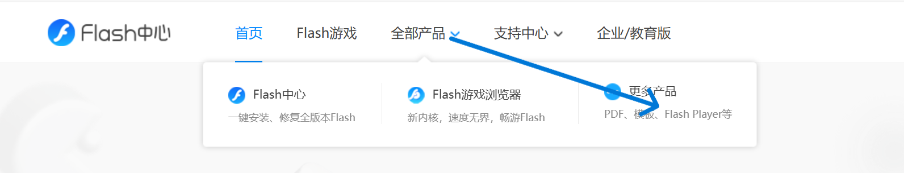
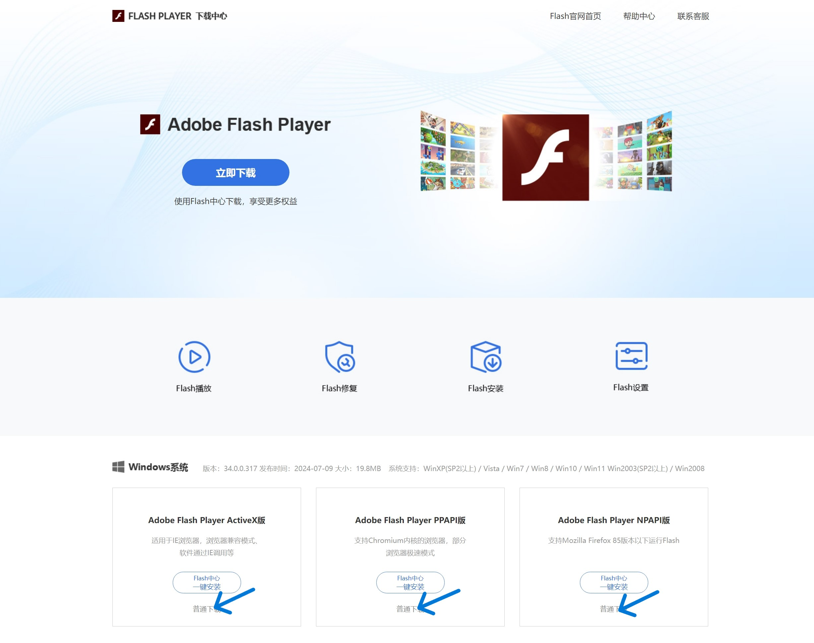

文章-正确启用 Flash Player
在打开无障碍模式后，为保障可读性，显示的页面可能会出现显示错位。
取消
开启
举报
在 GitHub 上编辑
文章目标
该文档旨在让用户在官方网站中下载正确的 Adobe Flash Player 并安装启用Flash（只下载核心功能），而不是Flash游戏中心。
步骤
1. 打开
Flash Player 下载中心
。如果你在
Flash中心
页面，可以按图片提示跳转，再选择Flash Player。
不要点击任何“立即下载”按钮。点击后你将下载到Flash中心而不是纯净的Flash Player。

2. 下拉页面找到蓝色箭头指示处点击下载即可。 